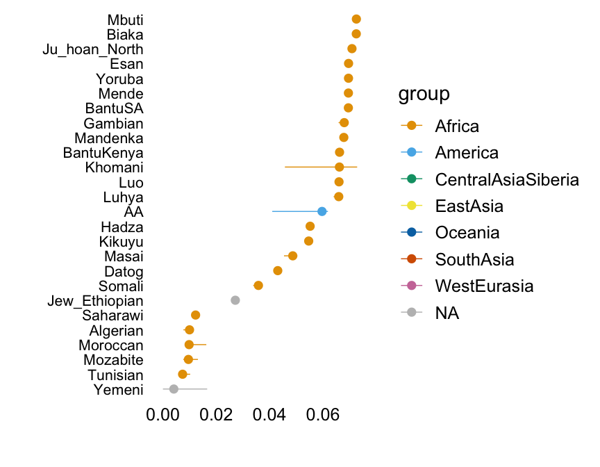
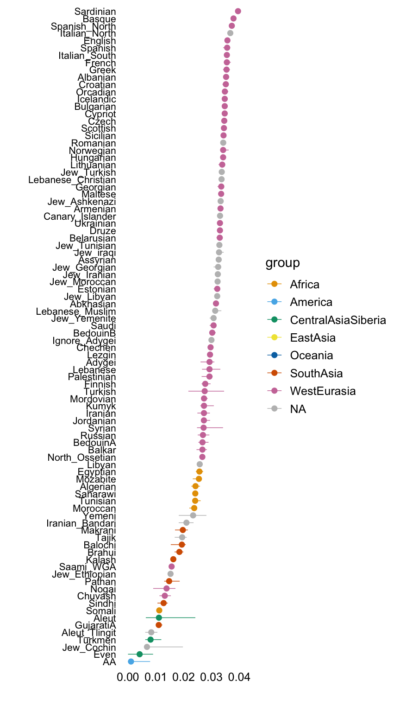
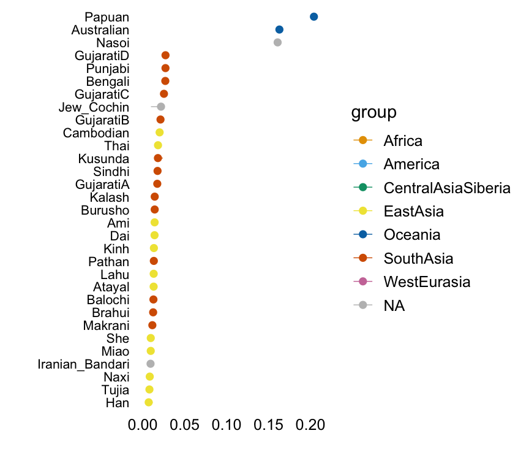
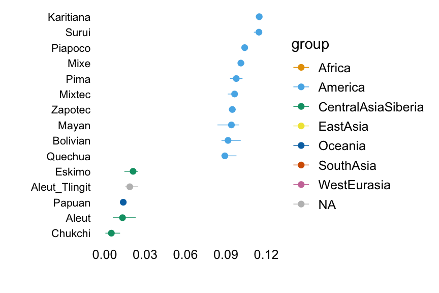
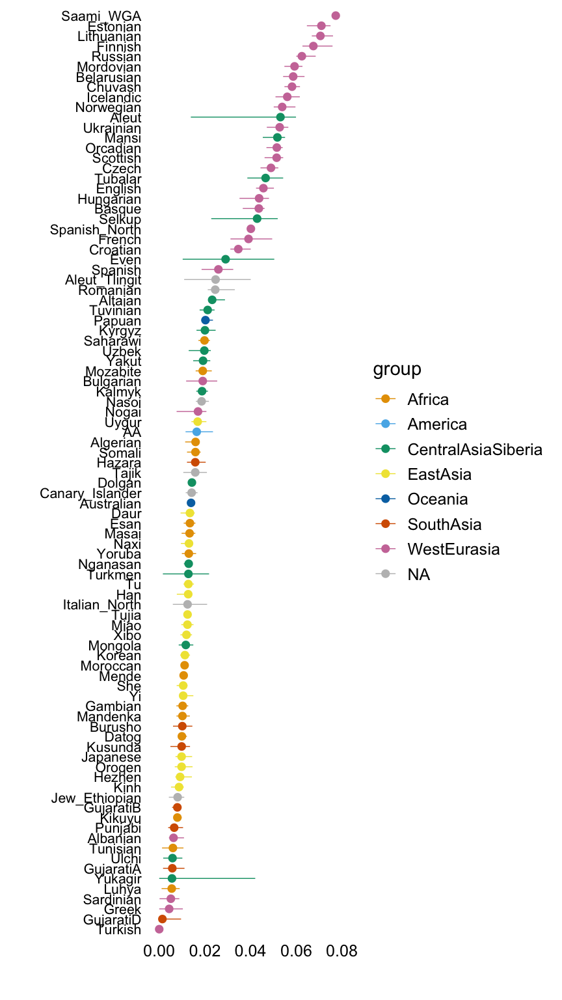
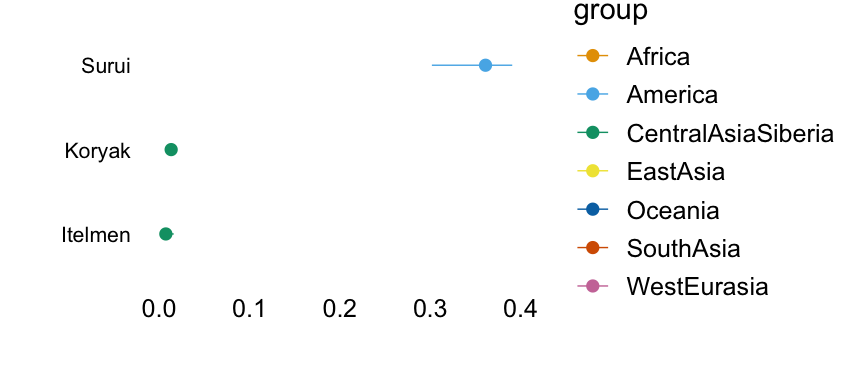
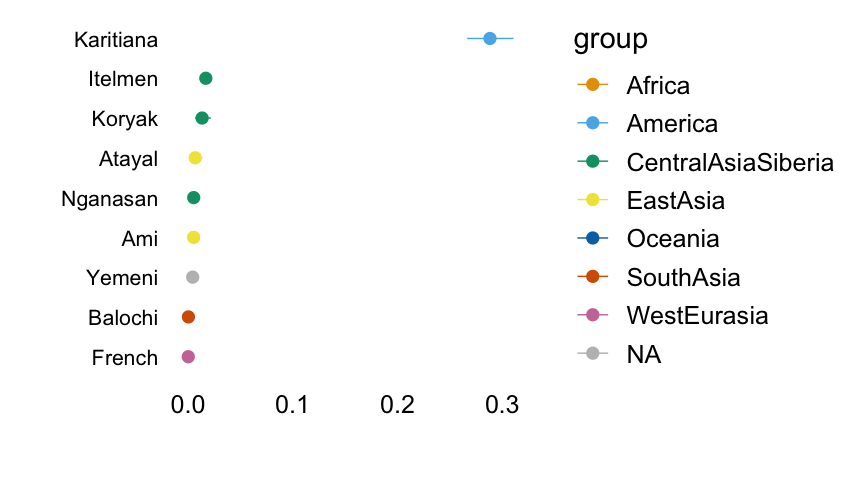
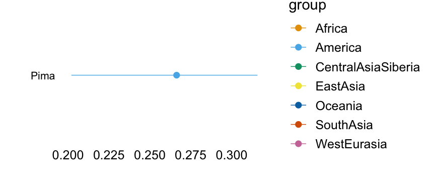
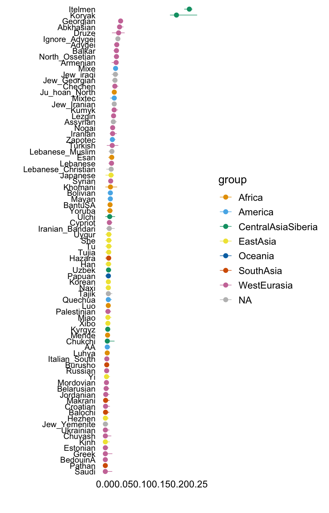

Alternative view of Human Origins factors
Peter Carbonetto
Last updated: 2019-03-14
Checks: 6 0
Knit directory: drift-workflow/analysis/
This reproducible R Markdown analysis was created with workflowr (version 1.2.0). The Report tab describes the reproducibility checks that were applied when the results were created. The Past versions tab lists the development history.
Great! Since the R Markdown file has been committed to the Git repository, you know the exact version of the code that produced these results.
Great job! The global environment was empty. Objects defined in the global environment can affect the analysis in your R Markdown file in unknown ways. For reproduciblity it’s best to always run the code in an empty environment.
The command set.seed(20190211) was run prior to running the code in the R Markdown file. Setting a seed ensures that any results that rely on randomness, e.g. subsampling or permutations, are reproducible.
Great job! Recording the operating system, R version, and package versions is critical for reproducibility.
Nice! There were no cached chunks for this analysis, so you can be confident that you successfully produced the results during this run.
Great! You are using Git for version control. Tracking code development and connecting the code version to the results is critical for reproducibility. The version displayed above was the version of the Git repository at the time these results were generated.
Note that you need to be careful to ensure that all relevant files for the analysis have been committed to Git prior to generating the results (you can use wflow_publish or wflow_git_commit). workflowr only checks the R Markdown file, but you know if there are other scripts or data files that it depends on. Below is the status of the Git repository when the results were generated:
working directory clean
Note that any generated files, e.g. HTML, png, CSS, etc., are not included in this status report because it is ok for generated content to have uncommitted changes.
These are the previous versions of the R Markdown and HTML files. If you’ve configured a remote Git repository (see ?wflow_git_remote), click on the hyperlinks in the table below to view them.
| File | Version | Author | Date | Message |
|---|---|---|---|---|
| Rmd | d484e71 | Peter Carbonetto | 2019-03-14 | wflow_publish(“hoa_global_alt.Rmd”) |
| Rmd | 0d9dd25 | Peter Carbonetto | 2019-03-14 | wflow_publish(“hoa_global_alt.Rmd”) |
| html | 749f46a | Peter Carbonetto | 2019-03-14 | Fixed some of the factor plots in hoa_global_alt page. |
| Rmd | 862414e | Peter Carbonetto | 2019-03-14 | wflow_publish(“hoa_global_alt.Rmd”) |
| html | 93a1bec | Peter Carbonetto | 2019-03-14 | Added more factor plots to hoa_global_alt analysis. |
| Rmd | abb7bcc | Peter Carbonetto | 2019-03-14 | wflow_publish(“hoa_global_alt.Rmd”) |
| html | cf9ecd9 | Peter Carbonetto | 2019-03-14 | Added first factor plot to hoa_global_alt page. |
| Rmd | 54d183a | Peter Carbonetto | 2019-03-14 | Added description of factor 2 to hoa_global_alt.Rmd. |
| html | 54d183a | Peter Carbonetto | 2019-03-14 | Added description of factor 2 to hoa_global_alt.Rmd. |
| Rmd | d8e3da0 | Peter Carbonetto | 2019-03-14 | Implemented function plot.response.by.label in hoa_global_alt_functions.R. |
| html | 2f78a1d | Peter Carbonetto | 2019-03-14 | Created initial rendering of hoa_global_alt analysis. |
| Rmd | a749d22 | Peter Carbonetto | 2019-03-14 | wflow_publish(“hoa_global_alt.Rmd”, verbose = TRUE) |
| Rmd | fdf11c4 | Peter Carbonetto | 2019-03-14 | Added hoa_global_alt_functions.R. |
| Rmd | 9c2be6a | Peter Carbonetto | 2019-03-14 | Added hoa_global_alt.Rmd. |
Following from the initial analysis, this analysis presents an alternative view of the factors.
Analysis settings
This is the file with a large data frame containing the factor loadings and other sample information.
loadings.file <- file.path("..","sandbox","loadings-forpeter-03-12-2019.rds")Set up environment
Load several R packages and function definitions used in the code chunks below.
library(ggplot2)
library(ggstance)
library(cowplot)
source(file.path("..","code","hoa_global_alt_functions.R"))Load results
Load the data frame containing the factor loadings and population labels.
hoa <- load.results(loadings.file)This data frame should contain information on 2,018 genotype samples:
nrow(hoa)[1] 2018Factors 2–21
The following plots are intended to help interpret the factors by relating them to the provided population labels.
Factor 2
This plot shows the median loading by assigned population label, with error bars capturing the 5th and 95th percentiles. Colours represent broad geographic groups. Populations in which the largest loading is less than 0.01 are not shown.
The second factor appears to capture east Asian, Oceanian and American populations, among others.
with(hoa,plot.response.by.label(factor2,Simple.Population.ID,Region))
| Version | Author | Date |
|---|---|---|
| cf9ecd9 | Peter Carbonetto | 2019-03-14 |
Factor 3
Factor 3 appears to capture mainly sub-Saharan African populations.
with(hoa,plot.response.by.label(factor3,Simple.Population.ID,Region))
Factor 4
Factor 4 seems to capture mainly European and Middle Eastern ancestry.
with(hoa,plot.response.by.label(factor4,Simple.Population.ID,Region))
Factor 5
Factor 5 captures Papuan and Australian populations.
with(hoa,plot.response.by.label(factor5,Simple.Population.ID,Region))
Factor 6
Factor 6 is largely capturing South American populations.
with(hoa,plot.response.by.label(factor6,Simple.Population.ID,Region))
Factor 7
Factor 7 seems to reflect East Asian origins.
with(hoa,plot.response.by.label(factor7,Simple.Population.ID,Region))
Factor 8
Factor 8 is some combination of populations originating in Siberia and Russia.
with(hoa,plot.response.by.label(factor8,Simple.Population.ID,Region))
Factor 9
Factor 9 corresponds largely to populations from India, as well as Middle Eastern and Central Eurasian groups.
with(hoa,plot.response.by.label(factor9,Simple.Population.ID,Region))
Factor 10
Factor 10 picks up a small number groups from sub-Saharan Africa, including the Khomani and Mbuti.
with(hoa,plot.response.by.label(factor10,Simple.Population.ID,Region))
Factor 11
with(hoa,plot.response.by.label(factor11,Simple.Population.ID,Region))Factor 12
with(hoa,plot.response.by.label(factor12,Simple.Population.ID,Region))
Factor 13
with(hoa,plot.response.by.label(factor13,Simple.Population.ID,Region))Factor 14
with(hoa,plot.response.by.label(factor14,Simple.Population.ID,Region))Factor 15
with(hoa,plot.response.by.label(factor15,Simple.Population.ID,Region))
Factor 16
with(hoa,plot.response.by.label(factor16,Simple.Population.ID,Region))
Factor 17
with(hoa,plot.response.by.label(factor17,Simple.Population.ID,Region))
Factor 18
with(hoa,plot.response.by.label(factor18,Simple.Population.ID,Region))
Factor 19
with(hoa,plot.response.by.label(factor19,Simple.Population.ID,Region))
Factor 20
with(hoa,plot.response.by.label(factor20,Simple.Population.ID,Region))
Factor 21
with(hoa,plot.response.by.label(factor21,Simple.Population.ID,Region))
sessionInfo()R version 3.4.3 (2017-11-30)
Platform: x86_64-apple-darwin15.6.0 (64-bit)
Running under: macOS High Sierra 10.13.6
Matrix products: default
BLAS: /Library/Frameworks/R.framework/Versions/3.4/Resources/lib/libRblas.0.dylib
LAPACK: /Library/Frameworks/R.framework/Versions/3.4/Resources/lib/libRlapack.dylib
locale:
[1] en_US.UTF-8/en_US.UTF-8/en_US.UTF-8/C/en_US.UTF-8/en_US.UTF-8
attached base packages:
[1] stats graphics grDevices utils datasets methods base
other attached packages:
[1] cowplot_0.9.4 ggstance_0.3.1 ggplot2_3.1.0
loaded via a namespace (and not attached):
[1] Rcpp_1.0.0 compiler_3.4.3 pillar_1.2.1 git2r_0.23.3
[5] plyr_1.8.4 workflowr_1.2.0 bindr_0.1.1 tools_3.4.3
[9] digest_0.6.17 evaluate_0.11 tibble_1.4.2 gtable_0.2.0
[13] pkgconfig_2.0.2 rlang_0.3.1 yaml_2.2.0 bindrcpp_0.2.2
[17] withr_2.1.2 stringr_1.3.1 dplyr_0.7.6 knitr_1.20
[21] fs_1.2.6 rprojroot_1.3-2 grid_3.4.3 tidyselect_0.2.4
[25] glue_1.3.0 R6_2.2.2 rmarkdown_1.10 purrr_0.2.5
[29] magrittr_1.5 whisker_0.3-2 backports_1.1.2 scales_0.5.0
[33] htmltools_0.3.6 assertthat_0.2.0 colorspace_1.4-0 labeling_0.3
[37] stringi_1.2.4 lazyeval_0.2.1 munsell_0.4.3